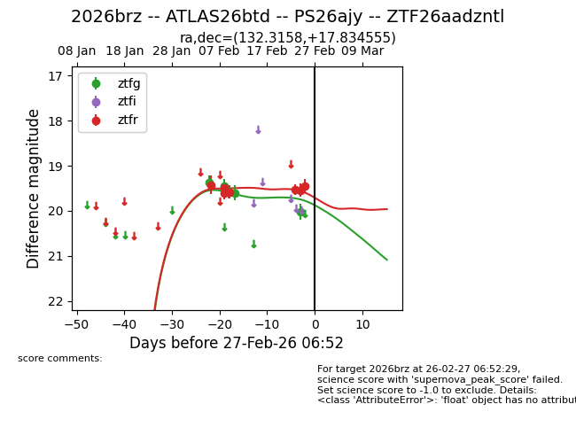
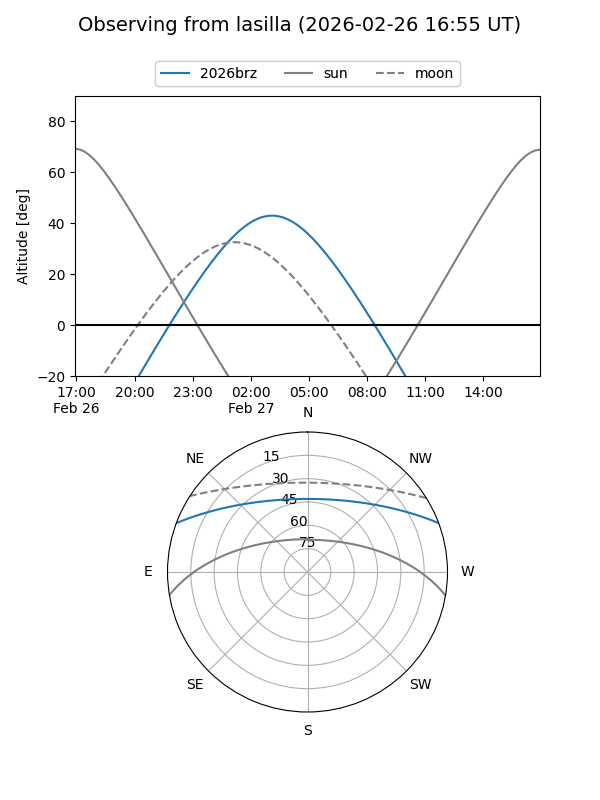
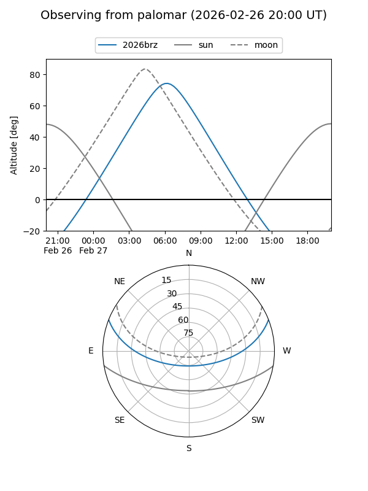
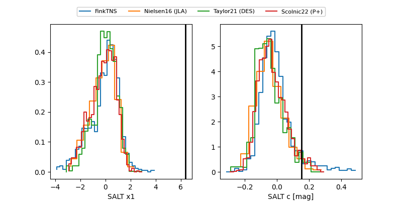

2026brz
Target 2026brz at 2026-02-27 06:53
Aliases and brokers:
FINK: link
Lasair: link
ALeRCE: link
TNS: link
YSE: link
alt names
ZTF26aadzntl (ztf,fink_ztf)
2026brz (tns,yse)
ATLAS26btd (atlas)
PS26ajy (panstarrs)
Coordinates:
equatorial (ra, dec) = 132.3158,+17.83456
equatorial (HMS+DMS) = 08:49:15.78,+17:50:04.40
galactic (l, b) = (208.8524,+33.79906)
Flags:
Photometry:
last ztfg=20.02, ztfr=19.44
6 ztfg, 7 ztfr detections
Lightcurve

Visibility


Additional plots
